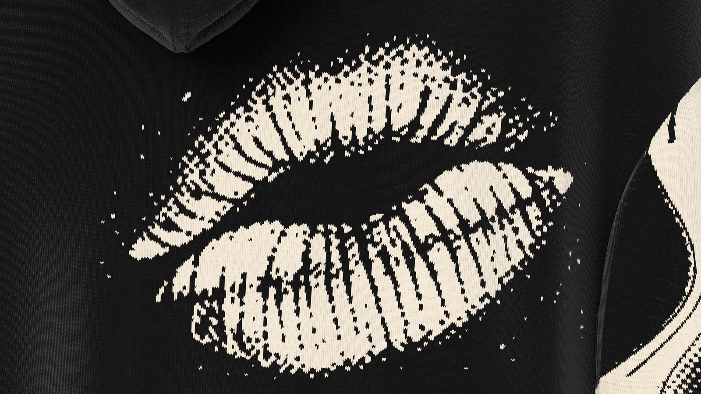
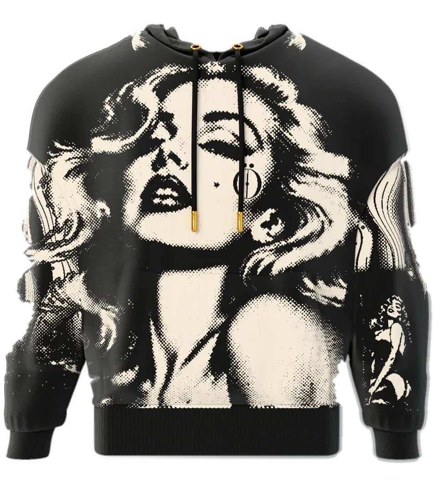
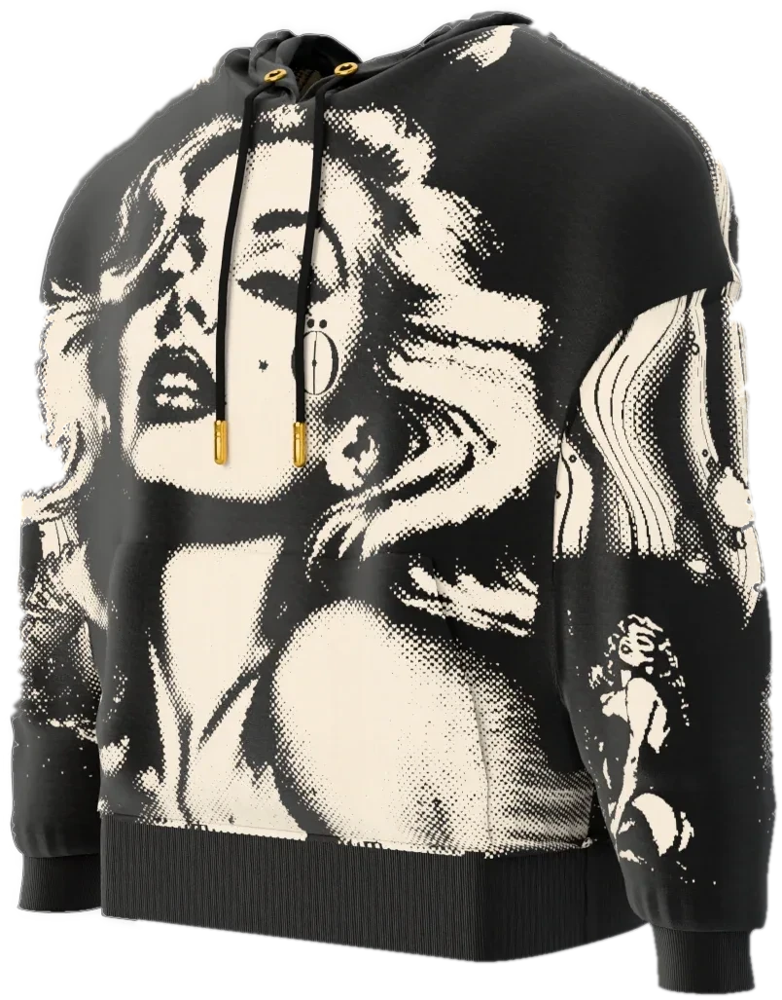
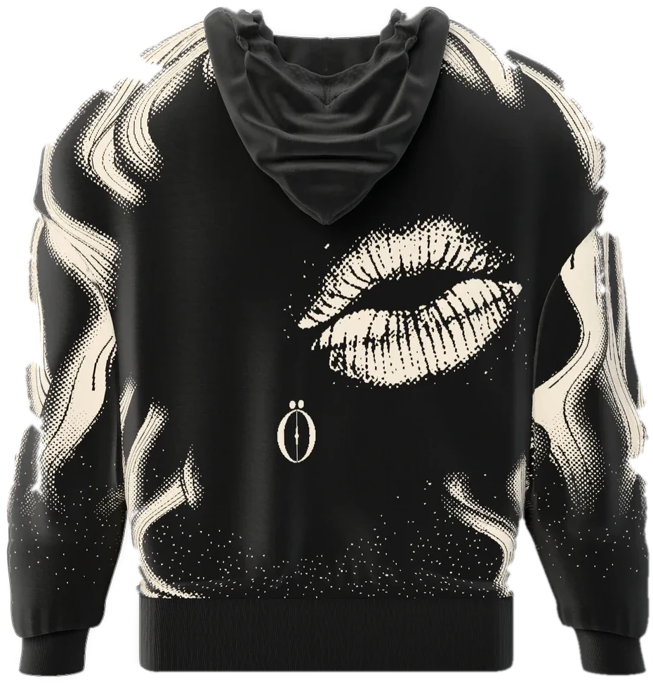

STAND-IN · img/heliodora/hero/master.* (the director’s signature shot: Her printed face where the reflection would be, ringed by the mirror’s bulbs (story/product-stills/DIRECTOR-SHOTS.md; its 144p preview stands in); 8K, 7680 × 4320)
STAND-IN · img/heliodora/hero/master.* (the director’s signature shot: Her printed face where the reflection would be, ringed by the mirror’s bulbs (story/product-stills/DIRECTOR-SHOTS.md; its 144p preview stands in); 8K, 7680 × 4320)Chapter I · Knitwear
Heliodora
Knit hoodie
 STAND-IN · img/heliodora/front/master.* (departments/apparel/new-pieces-2026-11/build/muse-allover/site/muse_front_16k.png; 16K, 8640 × 15360)
STAND-IN · img/heliodora/front/master.* (departments/apparel/new-pieces-2026-11/build/muse-allover/site/muse_front_16k.png; 16K, 8640 × 15360)front
 STAND-IN · img/heliodora/three-quarter/master.* (three-quarter view, 8K; 8K, 4320 × 7680)
STAND-IN · img/heliodora/three-quarter/master.* (three-quarter view, 8K; 8K, 4320 × 7680)three quarter
 STAND-IN · img/heliodora/back/master.* (back view, 8K; 8K, 4320 × 7680)
STAND-IN · img/heliodora/back/master.* (back view, 8K; 8K, 4320 × 7680)back
Chapter I
Heliodora
Knit hoodie
Knitted edge to edge, as a close-up fills the screen: her face on the front, her hair over the shoulders, and on the back the kiss, signed with the Ö.
- KNIT
- 28-GAUGE DOUBLE JACQUARD
- WEIGHT
- 300 GSM
- YARN
- 30S COMBED COTTON
- COLOURWAY
- BLACK / CREAM
- SIZE
- S · M · L · XL · XXL
USD 400 pre-sale USD 345
Made to order.
Keep a seatThe register sees the pre-sale first.
Details
- Pre-sale
- Made to order. We email your delivery date once production is confirmed. Cancel for a full refund any time before production starts.
- Returns
- Size exchanges within 14 days of delivery, unworn and with tags.
- Care
- Wash cold, inside out, on a gentle cycle. Dry flat. No tumble dryer, no bleach. Care
- Size
- The measurements
Close, at 100%

The kiss on the back
 STAND-IN · img/heliodora/detail-material/master.* (the knit at stitch scale, 8K close-up; 8K, 7680 × 4320)
STAND-IN · img/heliodora/detail-material/master.* (the knit at stitch scale, 8K close-up; 8K, 7680 × 4320)The knit at stitch scale
The cuff, where her hair thins to single dots



Where it is going
The lobby
The curtain to the house, tied back.
SIZES · M · L · XL · XXLProjected sizes. The block is cut at M.
KNIT28-GAUGE DOUBLE JACQUARDIt begins as a chart, one value for each stitch: the front alone is 722 stitches by 1,030.
STITCH11 BY 16 TO THE CMKnitted in black and cream, 11 stitches by 16 rows to the centimetre.
YARN30S COMBED COTTONHer hair runs onto the sleeves and thins to single dots by the cuff.
WEIGHT300 GSMDust rises from the hem and stops at 31% of the height.
HOODPLAIN BLACKIt closes on black cords through gold eyelets, ending in gold tips.
THE KISS208 × 133 MMOn the back, one kiss, tilted 12 degrees, the mark beside it at 6.0 by 4.8 cm.
INSIDEA SECOND BEDEvery stitch is knitted front and back, so no loose thread crosses the inside.
In the world
Heliodora
Knit hoodie
The lobby
Scroll to walk around it
In the same scene